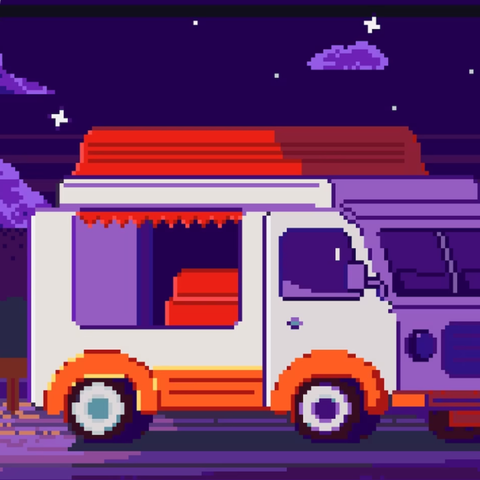

Фритрек и нулевой спринт: Подготовка к работе

</HTML>Это было похоже на въезд в новый район: всё знакомо только по рассказам, но каждый указатель уже обещает приключение. Хотелось скорее открыть редактор и понять, получится ли собрать страницу своими руками.
Самым важным оказалось не спешить. Даже пустой файл перестаёт пугать, если идти маленькими шагами и проверять результат чаще.